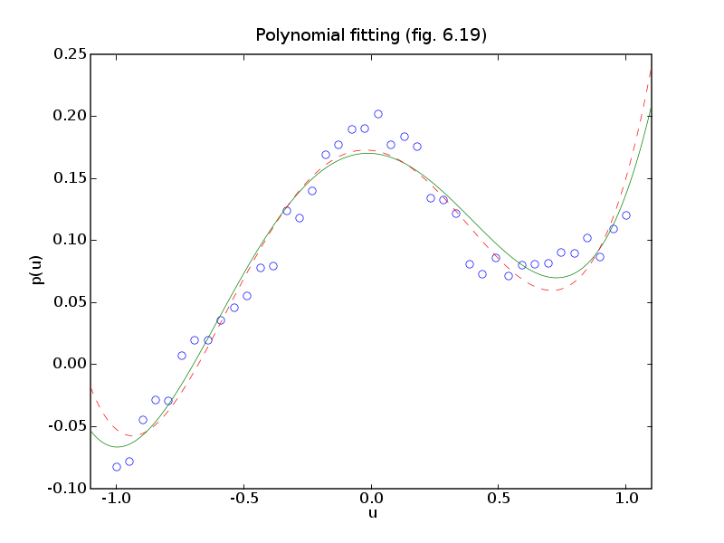
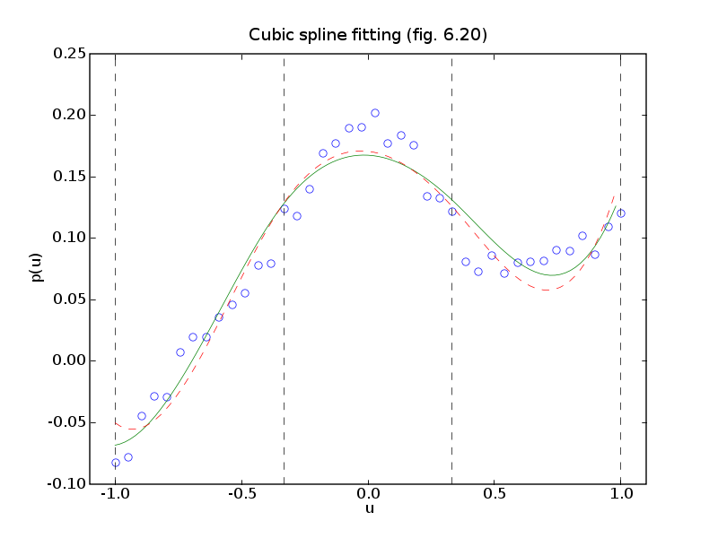

 
source code, data file (polapprox.bin)
# Figures 6.19 and 6.20, page 332.
# Polynomial and spline fitting.
from cvxopt import lapack, solvers, matrix, mul
from cvxopt.modeling import op, variable, max
try: import pylab
except ImportError: pylab_installed = False
else: pylab_installed = True
from pickle import load
solvers.options['show_progress'] = 0
data = load(open('polapprox.bin','rb'))
t, y = data['t'], data['y']
m = len(t)
# LS fit of 5th order polynomial
#
# minimize ||A*x - y ||_2
n = 6
A = matrix( [[t**k] for k in range(n)] )
xls = +y
lapack.gels(+A,xls)
xls = xls[:n]
# Chebyshev fit of 5th order polynomial
#
# minimize ||A*x - y ||_inf
xinf = variable(n)
op( max(abs(A*xinf - y)) ).solve()
xinf = xinf.value
if pylab_installed:
pylab.figure(1, facecolor='w')
pylab.plot(t, y, 'bo', mfc='w', mec='b')
nopts = 1000
ts = -1.1 + (1.1 - (-1.1))/nopts * matrix(list(range(nopts)), tc='d')
yls = sum( xls[k] * ts**k for k in range(n) )
yinf = sum( xinf[k] * ts**k for k in range(n) )
pylab.plot(ts,yls,'g-', ts, yinf, '--r')
pylab.axis([-1.1, 1.1, -0.1, 0.25])
pylab.xlabel('u')
pylab.ylabel('p(u)')
pylab.title('Polynomial fitting (fig. 6.19)')
# Fit of cubic spline
#
# f(t) = p1(t) -1 <= t <= -1/3
# = p2(t) -1/3 <= t <= 1/3
# = p3(t) 1/3 <= t <= 1
#
# p1(t) = x0 + x1*t + x2*t^2 + x3*t^3 -1 <= t <= -1/3
# p2(t) = x4 + x5*t + x6*t^2 + x7*t^3 -1/3 <= t <= 1/3
# p3(t) = x8 + x9*t + x10*t^2 + x11*t^3 1/3 <= t <= 1
#
# with constraints
#
# p1(-1/3) = p2(-1/3),
# p1'(-1/3) = p2'(-1/3)
# p1''(-1/3) = p2''(-1/3)
# p2(1/3) = p3(1/3),
# p2'(1/3) = p3'(1/3)
# p2''(1/3) = p3''(1/3)
n = 12
u1, u2 = -1.0/3, 1.0/3
I1 = [ k for k in range(m) if -1.0 <= t[k] < u1 ]
I2 = [ k for k in range(m) if u1 <= t[k] < u2 ]
I3 = [ k for k in range(m) if u2 <= t[k] <= 1.0 ]
m1, m2, m3 = len(I1), len(I2), len(I3)
A = matrix(0.0, (m,n))
for k in range(4):
A[I1,k] = t[I1]**k
A[I2,k+4] = t[I2]**k
A[I3,k+8] = t[I3]**k
G = matrix(0.0, (6,n))
# p1(u1) = p2(u1), p1(u2) = p2(u2)
G[0, list(range(8))] = \
1.0, u1, u1**2, u1**3, -1.0, -u1, -u1**2, -u1**3
G[1, list(range(4,12))] = \
1.0, u2, u2**2, u2**3, -1.0, -u2, -u2**2, -u2**3
# p1'(u1) = p2'(u1), p1'(u2) = p2'(u2)
G[2, [1,2,3,5,6,7]] = 1.0, 2*u1, 3*u1**2, -1.0, -2*u1, -3*u1**2
G[3, [5,6,7,9,10,11]] = 1.0, 2*u2, 3*u2**2, -1.0, -2*u2, -3*u2**2
# p1''(u1) = p2''(u1), p1''(u2) = p2''(u2)
G[4, [2,3,6,7]] = 2, 6*u1, -2, -6*u1
G[5, [6,7,10,11]] = 2, 6*u2, -2, -6*u2
# LS fit
#
# minimize (1/2) * || A*x - y ||_2^2
# subject to G*x = h
#
# Solve as a linear equation
#
# [ A'*A G' ] [ x ] [ A'*y ]
# [ G 0 ] [ y ] = [ 0 ].
K = matrix(0.0, (n+6,n+6))
K[:n,:n] = A.T * A
K[n:,:n] = G
xls = matrix(0.0, (n+6,1))
xls[:n] = A.T * y
lapack.sysv(K, xls)
xls = xls[:n]
# Chebyshev fit
#
# minimize || A*x - y ||_inf
# subject to G*x = h
xcheb = variable(12)
op( max(abs(A*xcheb - y)), [G*xcheb == 0]).solve()
xcheb = xcheb.value
if pylab_installed:
pylab.figure(2, facecolor='w')
nopts = 100
ts = -1.0 + (1.0 - (-1.0))/nopts * matrix(list(range(nopts)), tc='d')
I1 = [ k for k in range(nopts) if -1.0 <= ts[k] < u1 ]
I2 = [ k for k in range(nopts) if u1 <= ts[k] < u2 ]
I3 = [ k for k in range(nopts) if u2 <= ts[k] <= 1.0 ]
yls = matrix(0.0, (nopts,1))
yls[I1] = sum( xls[k]*ts[I1]**k for k in range(4) )
yls[I2] = sum( xls[k+4]*ts[I2]**k for k in range(4) )
yls[I3] = sum( xls[k+8]*ts[I3]**k for k in range(4) )
ycheb = matrix(0.0, (nopts,1))
ycheb[I1] = sum( xcheb[k]*ts[I1]**k for k in range(4) )
ycheb[I2] = sum( xcheb[k+4]*ts[I2]**k for k in range(4) )
ycheb[I3] = sum( xcheb[k+8]*ts[I3]**k for k in range(4) )
pylab.plot(t, y, 'bo', mfc='w', mec='b')
pylab.plot([-1.0, -1.0], [-0.1, 0.25], 'k--',
[-1./3,-1./3], [-0.1, 0.25], 'k--',
[1./3,1./3], [-0.1, 0.25], 'k--', [1,1], [-0.1, 0.25], 'k--')
pylab.plot(ts, yls, '-g', ts, ycheb, '--r')
pylab.axis([-1.1, 1.1, -0.1, 0.25])
pylab.xlabel('u')
pylab.ylabel('p(u)')
pylab.title('Cubic spline fitting (fig. 6.20)')
pylab.show()